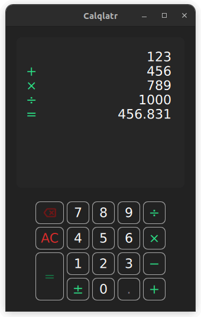

Calqlatr
A Qt Quick app designed for landscape and portrait devices that uses custom components, responsive layouts, and JavaScript for the application logic.

Calqlatr demonstrates various QML and Qt Quick features, such as displaying custom components and using responsive layouts. The application logic is implemented in JavaScript and the UI is implemented in QML.
Running the Example
To run the example from Qt Creator, open the Welcome mode and select the example from Examples. For more information, visit Building and Running an Example.
Displaying Custom Components
In the Calqlatr application, custom types are used. These are defined in their own separate .qml file:
- BackspaceButton.qml
- CalculatorButton.qml
- Display.qml
- NumberPad.qml
To use these custom types in Main.qml, add an import statement for the content folder where the types are located:
import "content"
For example, the NumberPad type is used in Main.qml to create the number pad of the calculator. This is nested within an Item type, the base type for all visual items in Qt Quick:
NumberPad {
id: numberPad;
Layout.margins: root.margin
}
Custom components are QML types that can be defined in any QML file, they behave the same as the components that are defined in their own .qml file, like NumberPad.qml. In NumberPad.qml the DigitButton component and the OperatorButton component are defined. New properties can be added or exsisting properties can be modified in these components. Here the onReleased handler is overwritten for both of the custom components.
component DigitButton: CalculatorButton {
onReleased: {
root.digitPressed(text)
updateDimmed()
}
}
component OperatorButton: CalculatorButton {
onReleased: {
root.operatorPressed(text)
updateDimmed()
}
textColor: controller.qtGreenColor
implicitWidth: 48
dimmable: true
}
In addition, use the CalculatorButton type for the different buttons on NumberPad. CalculatorButton.qml defines basic properties of a button, which you modify for each instance in NumberPad.qml. For the digit and operator buttons, a few extra properties are added, such as the text, width, and dimmable properties. Use dimmable to visually disable (dimmed) buttons whenever the calculator engine does not accept input from that button.
DigitButton {
text: "e"
dimmable: true
implicitWidth: 48
}
There is another file in the content directory called BackSpaceButton.qml, this is a special case of the CalculatorButton where we would like to render an image onto the button, rather than use text. This button is the same as an OperatorButton, but includes an icon rather than text:
icon.source: getIcon()
icon.width: 38
icon.height: 38
icon.color: getIconColor()
// include this text property as the calculator engine
// differentiates buttons through text. The text is never drawn.
text: "bs"
property bool dimmable: true
property bool dimmed: false
readonly property color backgroundColor: "#222222"
readonly property color borderColor: "#A9A9A9"
readonly property color backspaceRedColor: "#DE2C2C"
readonly property int buttonRadius: 8
function getBackgroundColor() {
if (button.dimmable && button.dimmed)
return backgroundColor
if (button.pressed)
return backspaceRedColor
return backgroundColor
Responsive Layouts
In this example, responsive layouts arrange the different UI components for both portrait and landscape modes. It also lets you toggle between these two modes. You can notice this in Main.qml, which defines a ColumnLayout for portrait mode, and RowLayout for landscape.
ColumnLayout {
id: portraitMode
anchors.fill: parent
visible: true
LayoutItemProxy {
target: display
Layout.minimumHeight: display.minHeight
}
LayoutItemProxy {
target: numberPad
Layout.alignment: Qt.AlignHCenter
}
}
RowLayout {
id: landscapeMode
anchors.fill: parent
visible: false
LayoutItemProxy {
target: display
}
LayoutItemProxy {
target: numberPad
Layout.alignment: Qt.AlignVCenter
}
}
The ColumnLayout, represents the portrait layout for the application, and the RowLayout represents the landscape layout. The visible property handles which layout is used at a given time. The id property of the NumberPad and Display components are used to set the target property of the LayoutItemProxy types. This allows both layouts to use the same content items. In addition, properties can be forwarded within the LayoutItemProxy item to the target itself. For example, when the NumberPad is instantiated, both layouts require a different Layout.alignment.
Toggling between the two layouts is done in the signal handler for the isPortraitMode property, by setting their visibilities:
onIsPortraitModeChanged: {
if (isPortraitMode) {
portraitMode.visible = true
landscapeMode.visible = false
} else {
portraitMode.visible = false
landscapeMode.visible = true
}
}
This is possible because QML creates signal handlers for all self-declared properties, in this case the on<Property>Changed handler, where <property> is the isPortraitMode property.
A responsive layout is also used in NumberPad.qml when defining the portrait and landscape layout for the NumberPad itself.
RowLayout {
spacing: controller.spacing
GridLayout {
id: scientificGrid
columns: 3
columnSpacing: controller.spacing
rowSpacing: controller.spacing
visible: !isPortraitMode
OperatorButton { text: "𝑥²" }
OperatorButton { text: "⅟𝑥" }
OperatorButton { text: "√" }
OperatorButton { text: "𝑥³" }
OperatorButton { text: "𝑠𝑖𝑛" }
OperatorButton { text: "⌊𝑥⌋" }
OperatorButton { text: "𝑙𝑜𝑔" }
OperatorButton { text: "𝑐𝑜𝑠" }
DigitButton {
text: "e"
dimmable: true
implicitWidth: 48
}
OperatorButton { text: "𝑙𝑛" }
OperatorButton { text: "𝑡𝑎𝑛" }
DigitButton {
text: "π"
dimmable: true
implicitWidth: 48
}
}
GridLayout {
id: mainGrid
columns: 5
columnSpacing: controller.spacing
rowSpacing: controller.spacing
BackspaceButton {}
DigitButton { text: "7" }
DigitButton { text: "8" }
DigitButton { text: "9" }
OperatorButton {
text: "÷"
implicitWidth: 38
}
OperatorButton {
text: "AC"
textColor: controller.backspaceRedColor
accentColor: controller.backspaceRedColor
}
DigitButton { text: "4" }
DigitButton { text: "5" }
DigitButton { text: "6" }
OperatorButton {
text: "×"
implicitWidth: 38
}
OperatorButton {
text: "="
implicitHeight: 81
Layout.rowSpan: 2
}
DigitButton { text: "1" }
DigitButton { text: "2" }
DigitButton { text: "3" }
OperatorButton {
text: "−"
implicitWidth: 38
}
OperatorButton {
text: "±"
implicitWidth: 38
}
DigitButton { text: "0" }
DigitButton {
text: "."
dimmable: true
}
OperatorButton {
text: "+"
implicitWidth: 38
}
}
} // RowLayout
In this case, two LayoutItemProxy items are created. Their target properties are set to scientificGrid, a Grid type, containing all the scientific buttons, and the mainGrid, another Grid type, containing all the standard buttons.
In CalculatorButton.qml, the text colors of the number pad buttons are also animated.
...
color: getBackgroundColor()
border.color: getBorderColor()
}
contentItem: Text {
text: button.text
font.pixelSize: button.fontSize
horizontalAlignment: Text.AlignHCenter
verticalAlignment: Text.AlignVCenter
color: getTextColor()
Behavior on color {
ColorAnimation {
duration: 120
easing.type: Easing.OutElastic
}
The color changes are animated by defining a Behavior on the color property. When a button is set to dimmed = true, the button appears darker. When a button is pressed, it lights up green. In order to dynamically change the dimmed property of all the buttons on the NumberPad, the buttonPressed signal calls the NumberPad's updateDimmed() function.
function updateDimmed(){
for (let i = 0; i < mainGrid.children.length; i++){
mainGrid.children[i].dimmed = root.isButtonDisabled(mainGrid.children[i].text)
}
for (let j = 0; j < scientificGrid.children.length; j++){
scientificGrid.children[j].dimmed = root.isButtonDisabled(scientificGrid.children[j].text)
}
}
Performing Calculations
The calculator.js file defines the calculator's engine. It contains variables to store the calculator's state, and functions that are called when the user presses the digit and operator buttons. To use the engine, import calculator.js into the Main.qml file using the alias CalcEngine:
import "content/calculator.js" as CalcEngine
By default, importing a JavaScript file from QML creates a new instance of it, and any state it contains is unique to that instance. The use of .pragma library allows the state to be shared amongst all users of the script.
.pragma library
When users press a digit, the text from the digit appears on the display. When they press an operator, the appropriate calculation is performed, and the result can be displayed using the equals (=) operator. The all-clear (AC) operator resets the calculator engine.
List of Files
See also QML Applications.